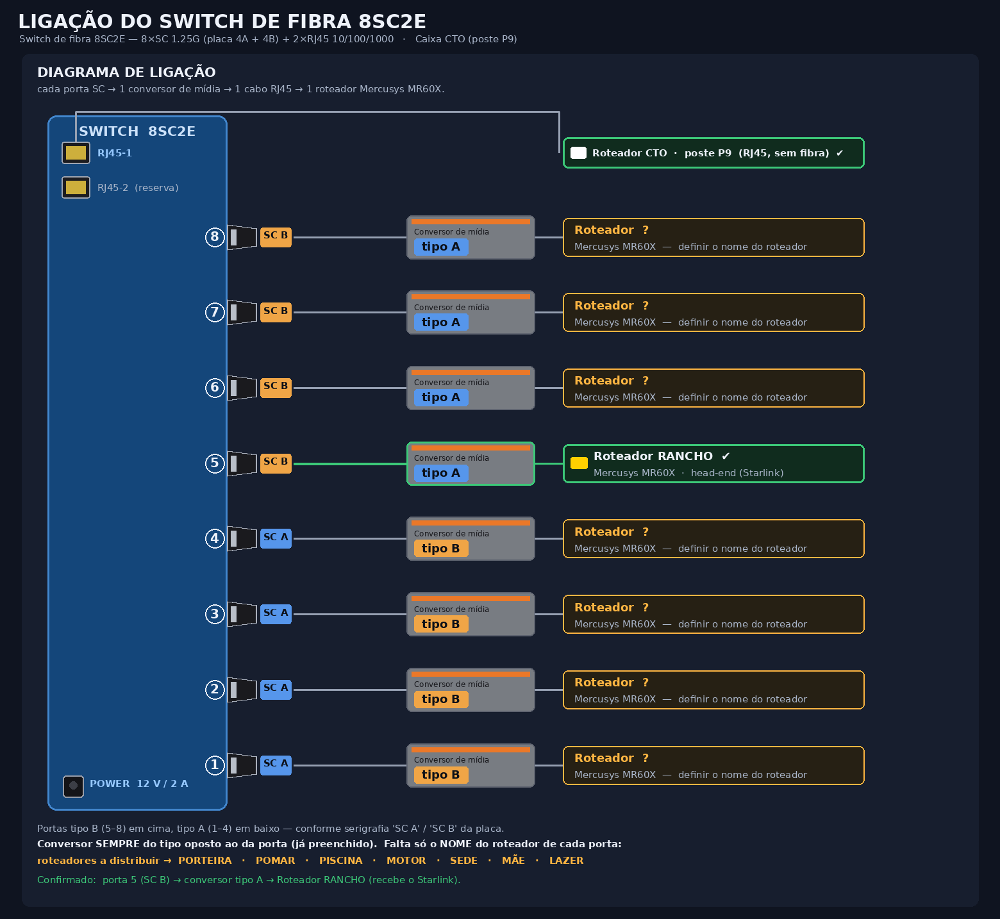

Projeto de infraestrutura: distribuição de internet por fibra óptica a partir de um link Starlink.
Caminho da internet: Starlink → Roteador RANCHO → conversor de mídia tipo A → switch de fibra 8SC2E → 1 conversor de mídia por porta → roteador Mercusys MR60X de cada local → Wi-Fi (LAN própria). O switch só faz a ligação da fibra; cada roteador é independente (NAT/DHCP próprio) e tem sua própria sub-rede 192.168.x.0/24 (gateway .1). O roteador CTO liga direto no RJ45-1 do switch.
| Roteador (Mercusys MR60X) | IP de gerência | Local |
|---|---|---|
| Roteador CTO | 192.168.0.1 | poste P9 (na caixa CTO) |
| Roteador MOTOR | 192.168.2.1 | poste P20 |
| Roteador RANCHO | 192.168.3.1 | nó — head-end do Starlink |
| Roteador PORTEIRA | 192.168.4.1 | poste P19 |
| Roteador POMAR | 192.168.5.1 | poste P14 |
| Roteador SEDE | 192.168.6.1 | nó de rede |
| Roteador PISCINA | 192.168.7.1 | poste P12 |
| Roteador MÃE | 192.168.8.1 | nó de rede |
| Roteador LAZER | 192.168.9.1 | nó de rede |
Cada roteador é independente (NAT/DHCP próprio).
| Porta | Tipo | Conversor | Roteador | Status | |
|---|---|---|---|---|---|
| 1 | SC A | tipo B | ? definir | definir | |
| 2 | SC A | tipo B | ? definir | definir | |
| 3 | SC A | tipo B | ? definir | definir | |
| 4 | SC A | tipo B | ? definir | definir | |
| 5 | SC B | tipo A | Roteador RANCHO | ✔ | |
| 6 | SC B | tipo A | ? definir | definir | |
| 7 | SC B | tipo A | ? definir | definir | |
| 8 | SC B | tipo A | ? definir | definir | |
| RJ45-1 | — | — | Roteador CTO · P9 | ✔ | |
| RJ45-2 | — | — | reserva | — |

17 câmeras Wi-Fi 360° — 2× Kapbom Wi-Fi 360° · 15× Soquete E27 360°.
| Local | Poste / coordenada | Modelo | Wi-Fi |
|---|---|---|---|
| Porteira | poste P19 | Kapbom Wi-Fi 360° | Roteador PORTEIRA |
| Galinheiro | poste P1 | Kapbom Wi-Fi 360° | Roteador RANCHO ~30 m |
| Chuchu | poste P17 | Soquete E27 360° | Roteador PORTEIRA ~89 m |
| Pomar Cima | poste P14 | Soquete E27 360° | Roteador POMAR |
| Pomar Baixo | poste P14 | Soquete E27 360° | Roteador POMAR |
| Piscina | poste P11 | Soquete E27 360° | Roteador PISCINA ~47 m |
| Mãe Lateral | poste P9 | Soquete E27 360° | Roteador MÃE |
| Mãe Frente | poste P8 | Soquete E27 360° | Roteador MÃE |
| Motor | poste P20 | Soquete E27 360° | Roteador MOTOR |
| Chiqueiro | poste P6 | Soquete E27 360° | Roteador MOTOR ~59 m |
| Sede | poste P5 | Soquete E27 360° | Roteador SEDE ~39 m |
| Rancho Entrada | -21.35427, -45.98845 | Soquete E27 360° | Roteador RANCHO |
| Cozinha Entrada | -21.35438, -45.98856 | Soquete E27 360° | Roteador RANCHO ~12 m |
| Mãe Cozinha | -21.35277, -45.98990 | Soquete E27 360° | Roteador MÃE |
| Mãe Varanda | -21.35289, -45.98986 | Soquete E27 360° | Roteador MÃE |
| Lazer Cozinha | -21.35266, -45.98975 | Soquete E27 360° | Roteador LAZER |
| Lazer Sala | -21.35259, -45.98978 | Soquete E27 360° | Roteador LAZER ~8 m |
{kind=link}
{kind=link}
{kind=link}